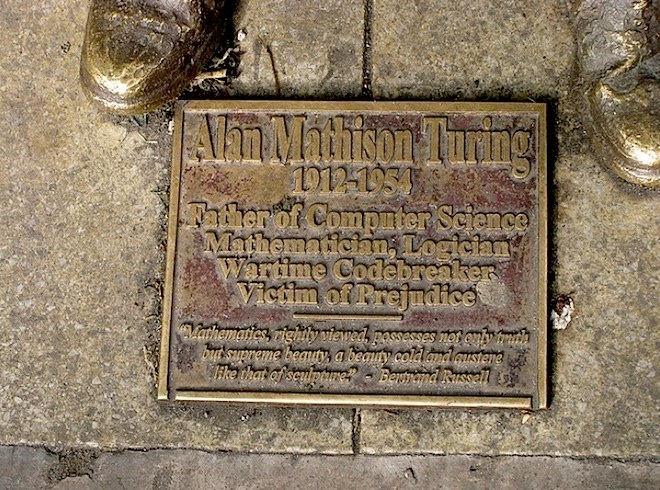

 Beyond his eccentricities, Turing was a brilliant academic and he was credited by Winston Churchill as having made the single biggest contribution to Allied victory in the war against Nazi Germany. Wired.co.uk has created a simple timeline of his achievements.
23 June 1912: Alan Mathison Turing was born in London
1926: Aged 14, he was sent to Sherborne School in Dorset. His first day of term coincided with the 1926 General Strike. Turing was so determined not to miss his first day of school that he cycled the 97km from his home in Southampton. His teachers worried that he leaned too heavily towards maths and science, at the expense of the classics. The headmaster wrote to his parents:
If he is to be solely a scientific specialist, he is wasting his time at a public school.
1927: At the age of 16, Turing got to grips with Albert Einstein's work and extrapolated Einstein's questioning of Newton's Laws of Motion from a text in which this was never made explicit.
1930: Turing's close school friend Christopher Morcom dies suddenly from bovine tuberculosis. Turing renounces his religious faith and becomes an atheist.
1931: Turing goes to study Mathematics at King's College, Cambridge.
1935: Turing proves the central limit theorem in his dissertation and is made a fellow at King's at the age of just 22.
1936: Turing published his paper On Computable Numbers and an Application to the Entscheidungsproblem (decision problem) in which he outlines the Universal Machine, which later became known as the Turing Machine. This was an idealised computing device that is capable of performing any mathematical computation that can be represented as an algorithm.
1936-1938: Turing spent time at Princeton in the US studying under Alonzo Church. There he started to study cryptology as well as mathematics. In 1938 he received his PhD; his dissertation was called Systems of Logic Based on Ordinals and introduced original logic and relative computing.
September 1938: Turing started to work part-time at the Government Code and Cypher School.
1939: The day after war is declared in September 1939, Turing arrives at Bletchley Park. There he works with Gordon Welchman to develop the Bombe, a device for decrypting the messages sent by Germans using their Enigma machines. The Bombe built on a machine that the Polish had already made, called the Bomba Kryptlogiczna. Turing used statistical techniques to optimise the trial of different possibilities in the code-breaking process using probability.
1941: Turing proposes to his co-worker Joan Clarke, a fellow mathematician and cryptanalyst. Shortly after, Turing had second thoughts, admitting to his fiancee that he was homosexual.
1942: Turing sent to the US as part of an intelligence collaboration. He shared what he knew about Enigma in return for being allowed to inspect the speech encryption system being set up to allow conversations between Churchill and Roosevelt. Turing was somewhat dismissive of US cryptanalysis, believing the Americans to rely too heavily on machinery instead of thought.
1941-43: Turing and colleagues manage to break the more complicated German Naval Enigma system. This is extremely helpful for the Allies during the Battle of the Atlantic as it could help them avoid the fearsome German U-boats, which had been responsible for sinking more than 700 Allied ships with 2.3 million tons of vital cargo.
1945: At the end of World War II, Turing is awarded an OBE for his services to his country
October 1945: Turing joined the National Physical Laboratory where he worked on developing an electronic digital stored-program computing machine that would later become the ACE (Automatic Computing Engine). By 1946 he had a finished proposal for the computer, but NPL did not have the resources to turn it into reality.
1947: Turing returned to Cambridge for a sabbatical year. The Pilot ACE was built in his absence and executed its first program on 10 May 1950.1949: Turing became deputy director of the Computing Laboratory at Manchester University, working on software for one of the earliest stored program computers – the Manchester Mark 1. He also explored the problem of artificial intelligence and proposed an experiment (in his seminal paper Computing Machinery and Intelligence) which became that attempted to define a standard for machine intelligence, which would later become known as the Turing test. The core idea was that a computer could be said to
1952: Without a computer powerful enough to execute his chess program, Turing played a game in which he simulated the computer, taking about half an hour to perform each move. The program lost to Turing's colleague Alick Glennie, but won against Champernowne's wife.thinkif a human interrogator could not tell it apart, through conversation, from a human being. Turing also worked with his former colleague D G Champernowne on a chess program for a computer that did not exist yet.
January 1952: Turing meets a man called Arnold Murray and invites him over to his house. Murray visits Turing's house on a number of occasions, staying the night. Murray later helps an accomplice break into Turing's house. Turing reports the crime and admits having a sexual relationship with Murray. Homosexual acts are illegal in the UK and so both were charged with gross indecency. Turing is given the choice of being imprisoned or chemically castrated with oestrogen hormone injections. He chooses the latter. Turing's conviction means his security clearance is removed which means he is barred from his cryptopgraphic consultancy for the British government.
08 June 1954: Turing's cleaner finds him dead. It appears that Turing poisoned himself using a cyanide-laced apple.
links